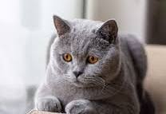
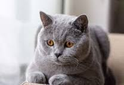

Welcome to our Pets Store
Cats
Cats
British Cat
The British Shorthair is the pedigreed version of the traditional British domestic cat, with a distinctively stocky body, thick coat, and broad face.
The British Shorthair is the pedigreed version of the traditional British domestic cat, with a distinctively stocky body, thick coat, and broad face.
